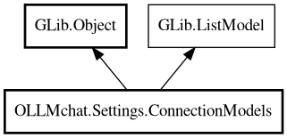

ConnectionModels
Object Hierarchy:

Description:
public class ConnectionModels : Object, ListModel
Manages the list of available models from all configured connections.
Provides a ListModel interface for use in dropdowns and configuration dialogs. Loads models directly from configured connections (unlike
AvailableModels which loads from cache/JSON file). Implements progressive refresh logic that only processes working connections and
adds/removes models incrementally.
Since:
1.0
Content:
Properties:
- public Config2 config { get; construct; }
Config2 instance (set via constructor).
- public HashMap<string,HashMap<string,ModelUsage>> connection_map { get; }
Storage: HashMap of connection URL to HashMap of model name to
ModelUsage. Used for efficient O(1) lookup by both connection and model name.
- public ArrayList<ModelUsage> items { get; }
Backing store: ArrayList containing ModelUsage objects. Direct access
to items (no need for Traversable/Iterable).
Creation methods:
Methods:
- public void append (ModelUsage item)
Append an item to the list (ListStore-compatible).
- public bool contains (ModelUsage item)
Check if an item exists in the list.
- public ModelUsage? find_model (string connection_url, string model_name)
Finds a ModelUsage by connection URL and model name.
- public ModelUsage? find_model_by_name (string model_name)
Finds a ModelUsage by model name across all connections.
- public Object? get_item (uint position)
ListModel interface implementation: Get item at position.
- public Type get_item_type ()
ListModel interface implementation: Get the item type.
- public uint get_n_items ()
ListModel interface implementation: Get the number of items.
- public async void refresh ()
Refresh models from all working connections (progressive update -
adds/removes missing models). Only processes connections where is_working = true.
- public void remove (ModelUsage item)
Remove an item from the list by item reference.
- public void remove_all ()
Remove all items from the list.
- public void remove_connection (string connection_url)
Removes all models for a given connection URL.
Inherited Members:
All known members inherited from class GLib.Object
- @get
- @new
- @ref
- @set
- add_toggle_ref
- add_weak_pointer
- bind_property
- connect
- constructed
- disconnect
- dispose
- dup_data
- dup_qdata
- force_floating
- freeze_notify
- get_class
- get_data
- get_property
- get_qdata
- get_type
- getv
- interface_find_property
- interface_install_property
- interface_list_properties
- is_floating
- new_valist
- new_with_properties
- newv
- notify
- notify_property
- ref_count
- ref_sink
- remove_toggle_ref
- remove_weak_pointer
- replace_data
- replace_qdata
- set_data
- set_data_full
- set_property
- set_qdata
- set_qdata_full
- set_valist
- setv
- steal_data
- steal_qdata
- thaw_notify
- unref
- watch_closure
- weak_ref
- weak_unref
All known members inherited from interface GLib.ListModel